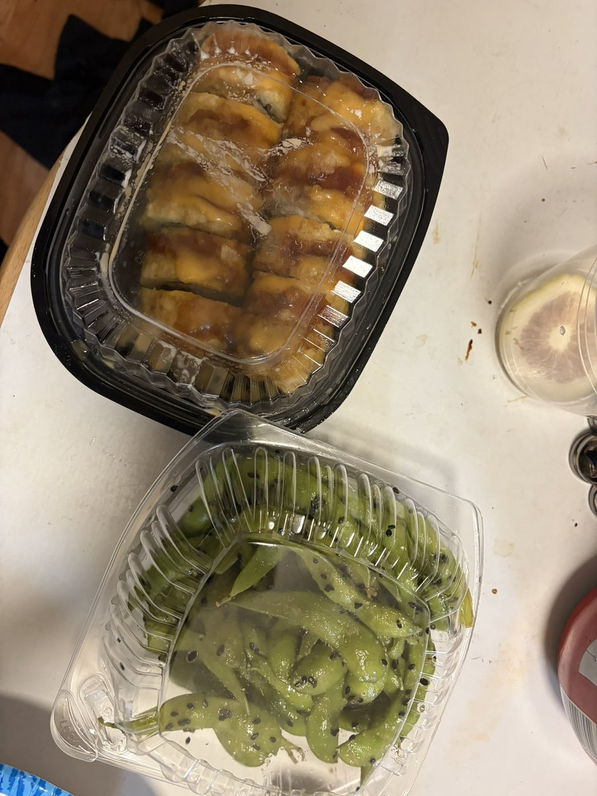

绿色杯子千尋醬喵～😦😨😰🥵
@qianxunchan
@8964_xy11 加油加油哥们！😆😆😆😁

曦夜今天吃什么（蓝v互关寻找中）
@8964_xy11
牛马小记：
点单不知道为什么明明知道点Maguro但是搞成Tamago了🥲被训了
然后这是今天厨房给我带回家的😁开心
怎么不算凭自己本事吃到omakase呢😁窝也是在厨师旁边告诉厨师想吃什么😁
昨日收入80 https://t.co/wgZNtF8pNJ